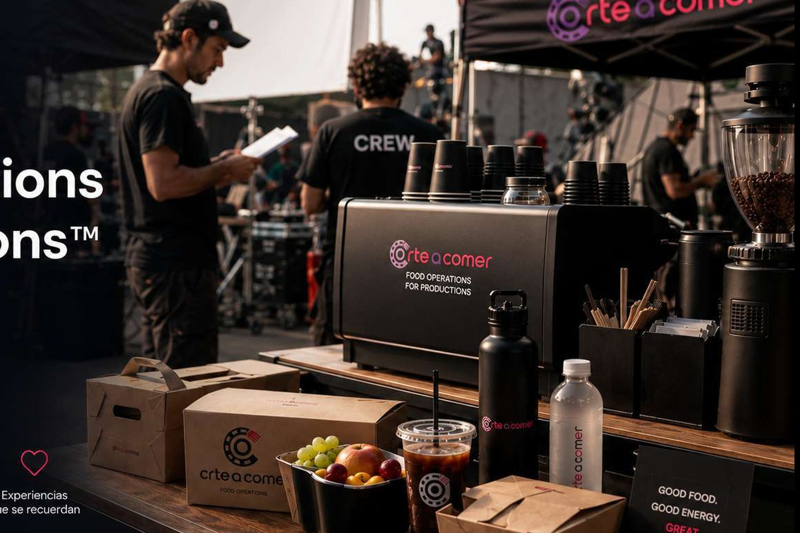
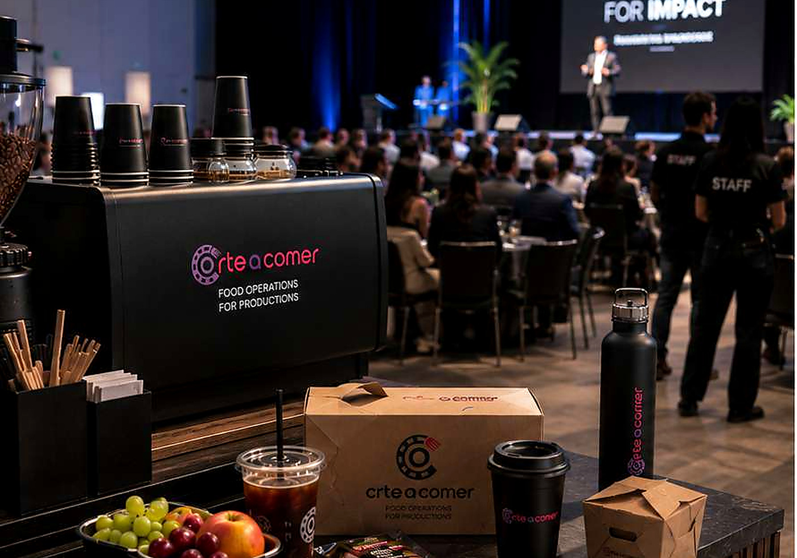
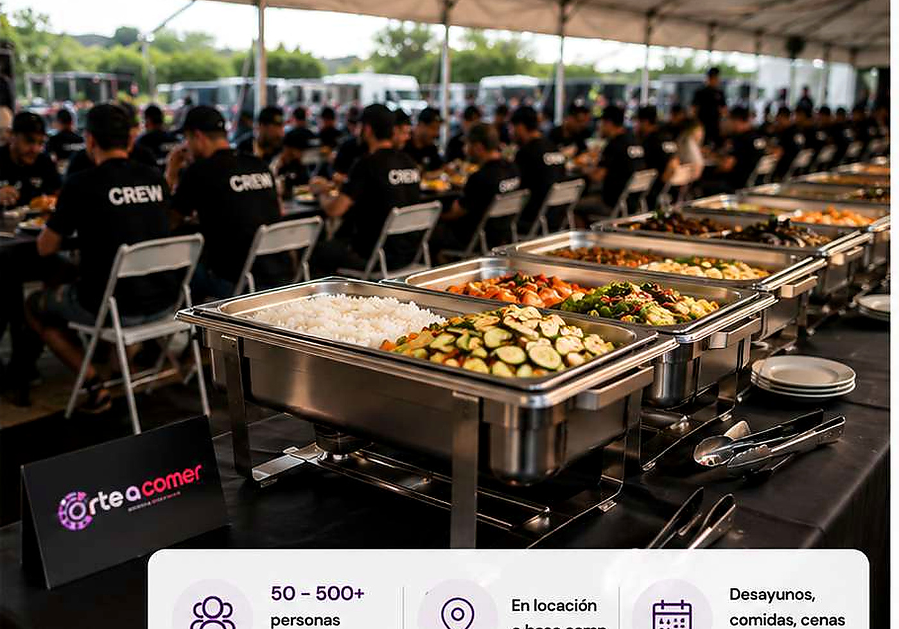
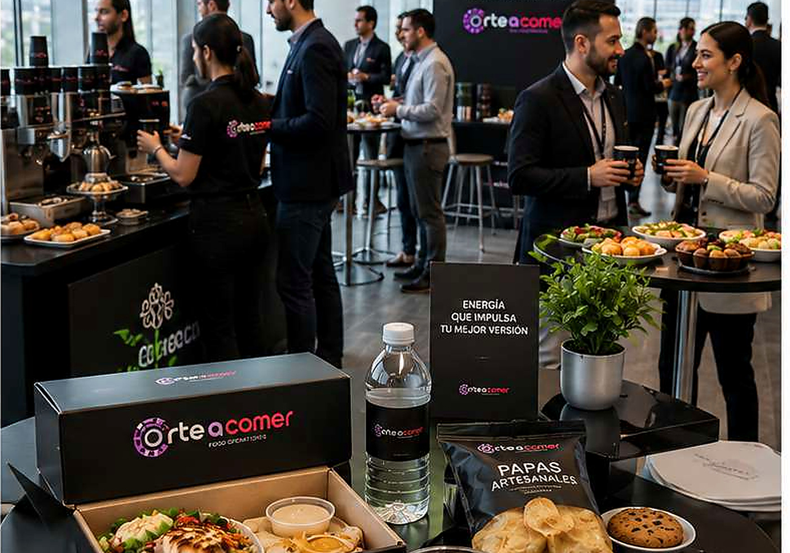
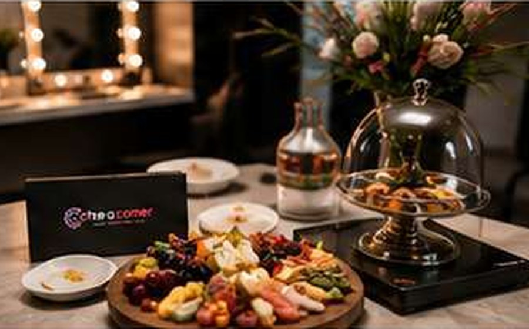
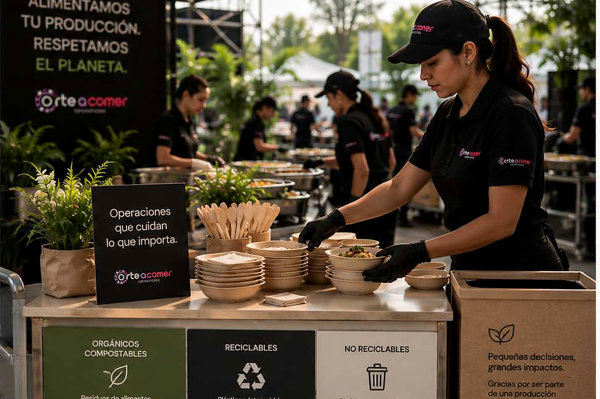

Seguimos el call sheet
Planeamos servicios alrededor de los tiempos reales de operación.

Food Operations for Productions
Tú produces. Nosotros alimentamos la operación.
Desayuno, comida, cena, box lunch, coffee break e hidratación para staff, crew, talento y cliente.
Casos reales
Montajes, estaciones, buffet, atención ejecutiva y formatos individuales. Diferentes proyectos, el mismo estándar de orden, puntualidad y servicio.






Pensamos como producción
Nos integramos al ritmo del proyecto: horarios, llamados, perfiles, montaje, reposición y logística. El objetivo es que comer sea la parte fácil de la jornada.
Planeamos servicios alrededor de los tiempos reales de operación.
Staff, crew, talento, cliente e invitados dentro del mismo proyecto.
Buffet, box lunch, emplatado, coffee station o combinación.
Menú, transporte, montaje, servicio y cierre en una sola operación.
Cómo trabajamos
Nos das los datos críticos. Nosotros proponemos menú, formato de servicio y ejecución.
Fecha, ciudad, horarios, cantidad y perfiles.
Menú, servicio, bebidas y formatos adecuados.
Rutas, personal, montaje y ventanas de entrega.
Orden, higiene, puntualidad y reposición.
Soluciones
Podemos resolver un solo servicio o acompañar la producción durante todo el día.
Alimentación completa y confiable para staff y crew.
Desayuno · comida · cenaAlimentos prácticos para movilidad, traslados y ventanas reducidas.
Box lunch · entregas escalonadasAlternativas frescas para complementar jornadas largas.
Healthy corner · fruta · snacksHospitalidad con presentación cuidada para talento e invitados.
Servicio especial · atención dedicadaAtención para juntas, clientes y espacios ejecutivos.
Emplatado · hospitalidadCafé, té, bebidas y acompañamientos durante la operación.
Coffee break · servicio continuoFormatos de servicio
Para grupos medianos y grandes y ventanas de alimentación definidas.
Para llamados escalonados, movilidad y consumo rápido.
Para talento, clientes, juntas o servicios de mayor presentación.
Café, hidratación y snacks disponibles durante la jornada.
Operación responsable
Planeamos cantidades, formatos y logística para reducir merma y materiales innecesarios sin comprometer la operación.

Full Food Operations
Coordinamos alimentación para producciones, filmaciones y eventos corporativos dentro y fuera de CDMX.
Antes de cotizar
Sí. Diseñamos alimentación para staff, crew, talento y clientes según horarios, sede y dinámica de producción.
Sí. Podemos operar uno o varios tiempos durante la misma jornada y coordinar entregas escalonadas.
Sí. El formato se define según espacio, horarios, número de personas y flujo de consumo.
Sí. Coordinamos operaciones en distintas ciudades de México según alcance y volumen del proyecto.
Sí. Diseñamos la propuesta considerando cantidad, tiempos, perfil, sede, restricciones y presupuesto objetivo.
Cotización
Con fecha, ciudad, número de personas y tiempos de alimentación ya podemos construir una primera propuesta útil.